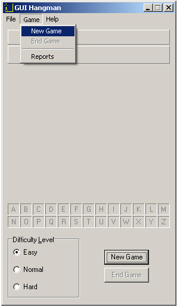

Starting a New Game
After
logging on
, you'll be able to begin a new game. There are two ways that you can start a new game, either by clicking on the New Game button or selecting
Game | New Game
from the main menu.
